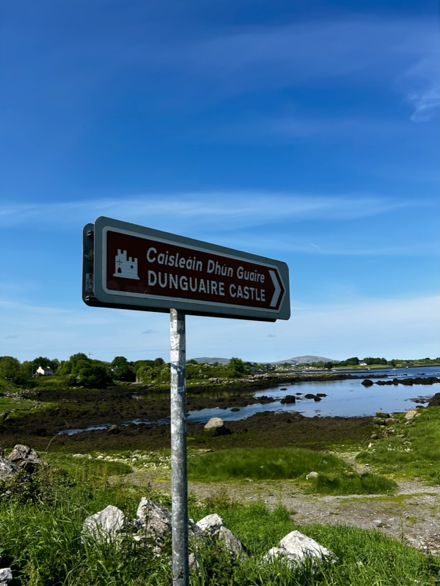
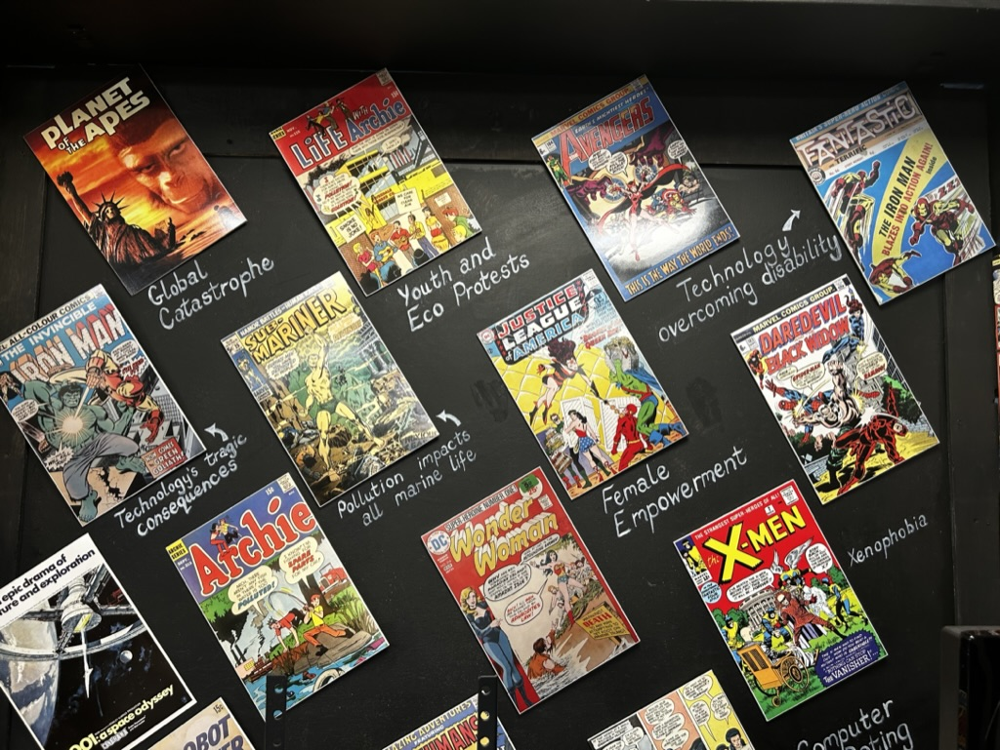
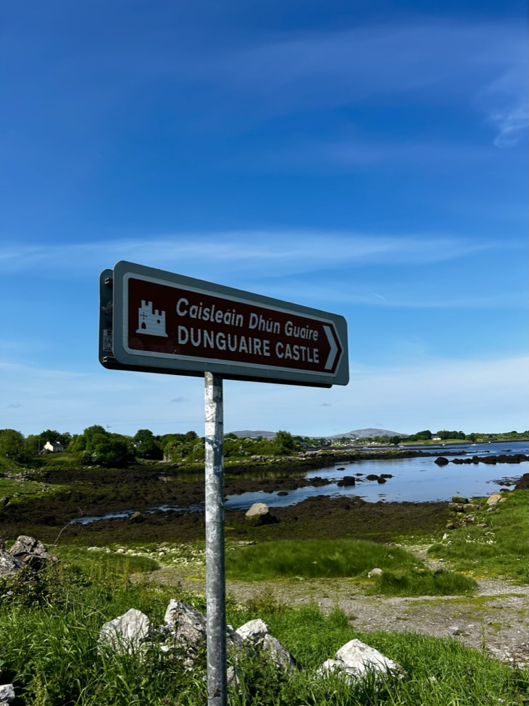
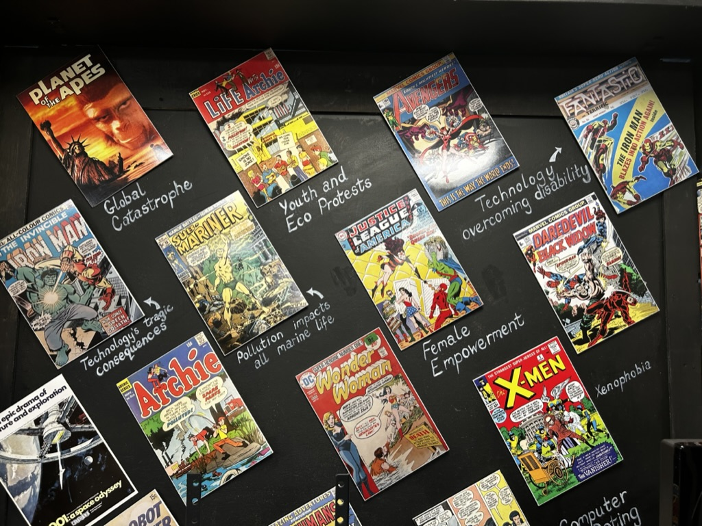

When I strolled down Grafton Street, I was amazed by the vibrant atmosphere and the abundance of local shops like Zara, Sketchers, and even Disney! There were so many options for dining too, with a diverse range of restaurants to choose from. I decided to try out this cool donut place that had all sorts of delicious desserts. It was a fun experience exploring the bustling street and indulging in tasty treats amidst the lively surroundings.


 


